06/04/2023 — RBBB và LAFB. Có phải blốc ba phân nhánh? Sự phức tạp của Wenckebach, kèm phân tích của Ken Grauer.
Bản dịch tiếng Việt của bài "RBBB and LAFB. Is it trifascicular block? The complexities of Wenckebach, with Ken Grauer analysis." – Dr. Smith’s ECG Blog. Giữ nguyên toàn bộ 12 hình ảnh của bản gốc.
Bệnh nhân này đến viện vì biến chứng của cầu nối động-tĩnh mạch (AV fistula) chạy thận.
Tiền sử bệnh:
Tiền sử bệnh tim thiếu máu cục bộ
Tiền sử suy tim sung huyết
Đái tháo đường phải điều trị bằng insulin
Creatinin huyết thanh trước phẫu thuật >2 mg/dL
Bệnh nhân được ghi điện tâm đồ này:

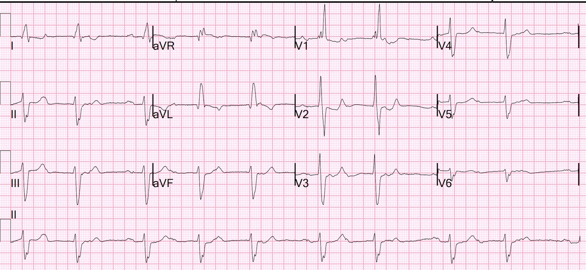
Bạn nghĩ gì?
Có blốc AV độ 2 (Mobitz I, Wenckebach) kèm RBBB và LAFB
Các bác sĩ đã nhận ra RBBB và LAFB, nhưng không nhận ra Wenckebach. Họ so sánh với một điện tâm đồ trước đó và cho rằng hai bản ghi giống hệt nhau. Đây là điện tâm đồ trước đó, ghi 2 tháng trước để đánh giá trước phẫu thuật đục thủy tinh thể

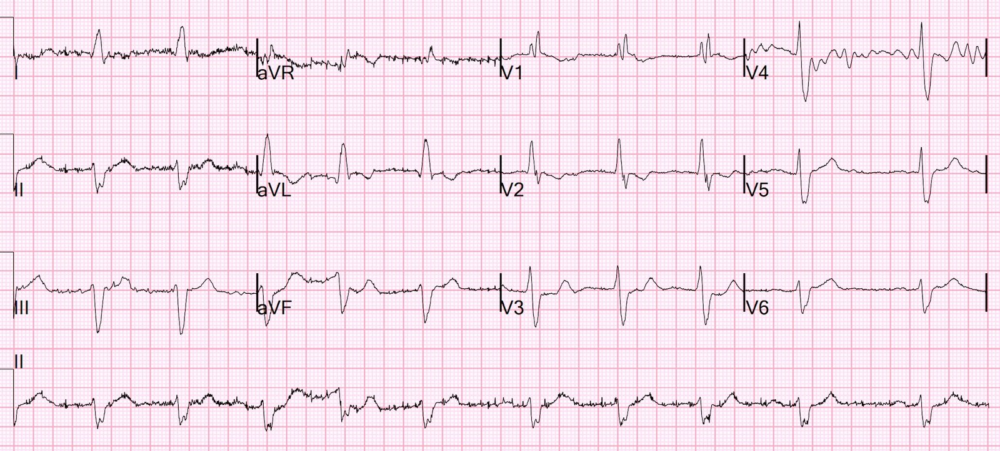
Bản ghi này trông như rung nhĩ kèm RBBB và LAFB. Tôi không thấy sóng P, và tất nhiên Wenckebach đòi hỏi phải có sóng P.
Xem phần diễn giải của Ken bên dưới.
Các điện tâm đồ này có mức nguy cơ tương tự nhau không?
Tôi không tìm được một báo cáo ca bệnh nào về Wenckebach kèm RBBB và LAFB, nên tôi không biết mức nguy cơ.
Tuy nhiên, blốc AV độ 1 kèm RBBB và LAFB mang cái tên sai lệch “blốc ba phân nhánh” (trifascicular block), báo trước blốc AV hoàn toàn (độ 3), và bắt buộc nhập viện nếu bệnh nhân đến viện vì ngất.
Nếu bệnh nhân không đến viện vì ngất, thì quản lý ngoại trú có lẽ là ổn, kèm chuyển khám chuyên khoa tim mạch.
Điều thú vị là bệnh nhân đã đến viện nhiều lần trong những tháng sau đó với các điện tâm đồ Wenckebach này mà không được nhận ra:

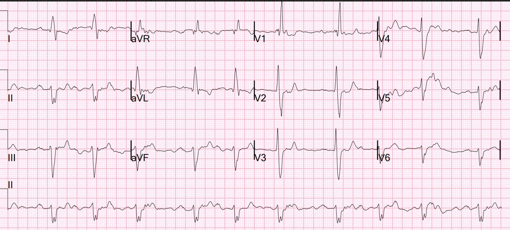
Bản ghi này được đọc là “Blốc AV độ một”. Nhưng đó là Wenckebach.

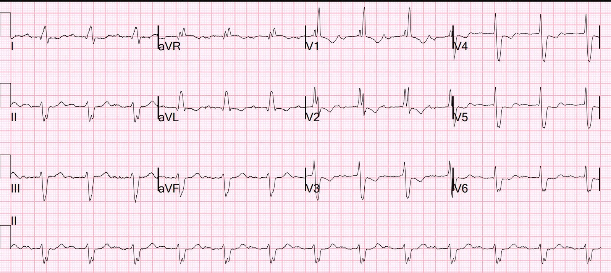
Bản ghi này được một bác sĩ tim mạch đọc là “Blốc AV độ một”. Nhưng đó là Wenckebach.

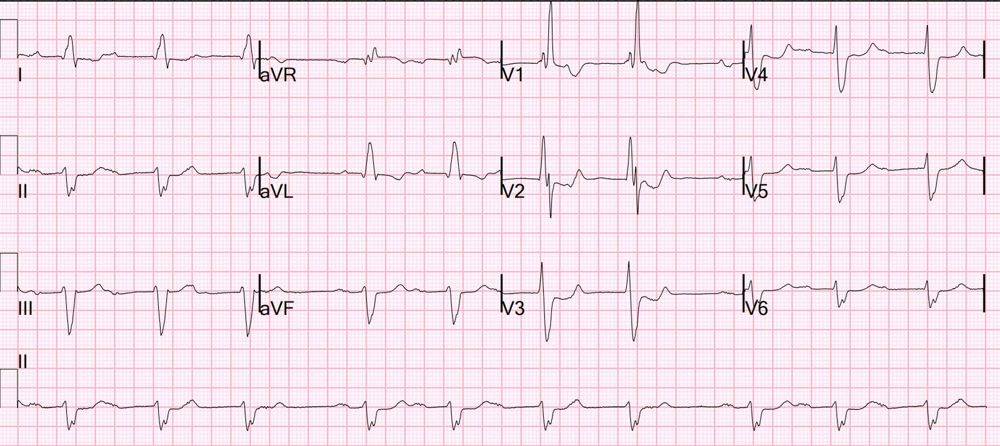
Bản ghi này được đọc là “Rung nhĩ”. Nhưng đó là Wenckebach.

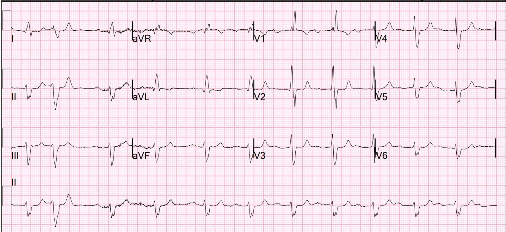
Bản ghi này được đọc là “Rung nhĩ”. Nhưng đó là Wenckebach.

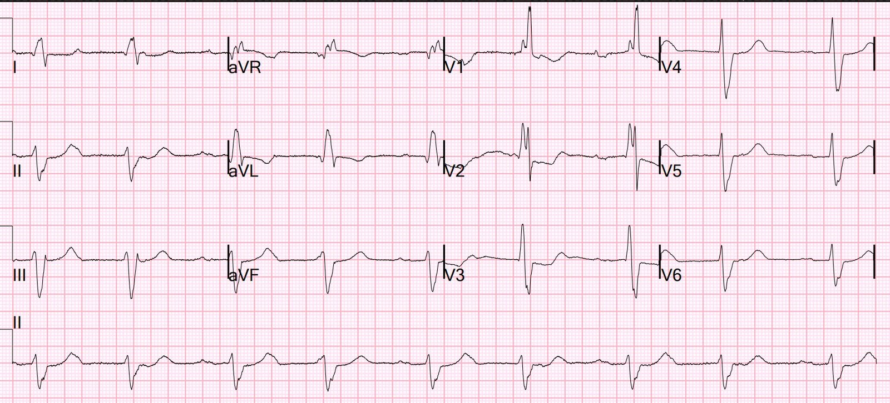
Bản ghi này được khoa Tim mạch đọc là “Blốc AV độ một”. Nhưng đó là Wenckebach.

===================================
BÌNH LUẬN CỦA TÔI, bởi KEN GRAUER, MD (6/4/2023):
===================================
Tôi thấy ca hôm nay nêu ra một số khái niệm quan trọng liên quan đến sự xuất hiện trên lâm sàng và ý nghĩa của các rối loạn hệ dẫn truyền phối hợp. Bệnh nhân được nói đến có lẽ là một người lớn tuổi, được ghi điện tâm đồ sau phẫu thuật đục thủy tinh thể ( = điện tâm đồ #1 trong Hình 1).
- Trong hồ sơ có một điện tâm đồ trước đó ghi 2 tháng trước ( = điện tâm đồ #2).
CÂU HỎI:
- 2 điện tâm đồ này có thật sự khác nhau không?

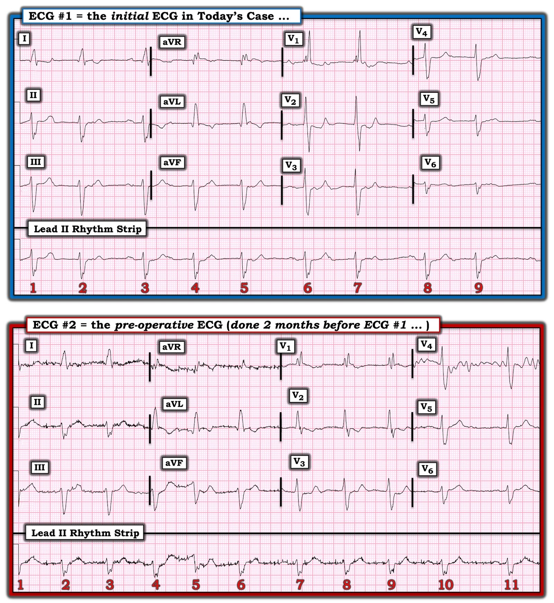
SUY NGHĨ CỦA TÔI về điện tâm đồ #1 trong Hình 1:
Đúng như Dr. Smith nói — diễn giải “tóm gọn” của điện tâm đồ #1 là có blốc hai phân nhánh (tức là RBBB/LAHB) + Wenckebach AV. Xem KỸ HƠN:
- Có loạn nhịp xoang khá rõ rệt (các mũi tên ĐỎ trong Hình 2). Điểm này trở nên rất quan trọng khi chúng ta so sánh điện tâm đồ #1 với điện tâm đồ #2 (việc tôi sẽ làm ngay sau đây).
- ĐIỂM THEN CHỐT (PEARL) #1: Trong blốc AV độ 2 và độ 3, thường gặp loạn nhịp xoang “theo pha thất” (ventriculophasic). Thông thường với loạn nhịp xoang theo pha thất, các khoảng P-P “kẹp” phức bộ QRS ở giữa có xu hướng ngắn hơn các khoảng P-P không chứa QRS nào ở giữa. Lý do sinh lý của hiện tượng này — được cho là do tuần hoàn tăng thoáng qua nhờ co bóp cơ học từ phức bộ QRS “bị kẹp ở giữa”.
- Trong Hình 2 — chúng ta không thấy tương quan về thời gian P-P này một cách nhất quán (tức là khoảng P-P ngắn nhất nằm giữa nhát #2-3, vốn không chứa QRS — trong khi khoảng P-P giữa 2 sóng P đầu tiên trên bản ghi này lại dài hơn tương đối nhiều [tức là 780 msec.]).
- ĐIỂM THEN CHỐT #2 (Vượt ra ngoài phần cốt lõi): Một lý do có thể giải thích sự biến thiên P-P rõ rệt và không đoán trước được thấy trong Hình 2 là bệnh nhân này có SSS (hội chứng suy nút xoang – Sick Sinus Syndrome). Vì vậy — ghi Holter 24 giờ sẽ quan trọng, không chỉ để xem có lúc nào xuất hiện blốc AV hoàn toàn hay không — mà còn để tìm các khoảng ngưng “tố giác” dài hơn 2.5-3.0 giây, có thể ghi nhận được SSS tiềm ẩn.
- ĐIỂM THEN CHỐT #3: Nhận biết bản chất rõ rệt và không đoán trước được của loạn nhịp xoang ở bệnh nhân này sẽ trở nên rất quan trọng ngay sau đây, khi chúng ta xem kỹ hơn điện tâm đồ #2.
ĐIỂM THEN CHỐT #4: Mỗi khi thấy blốc AV độ 2 Mobitz I — điều quan trọng là phải soi kỹ các dấu hiệu điện tâm đồ trên phần còn lại của bản ghi, tìm một lý do có thể giải thích TẠI SAO bệnh nhân có Wenckebach AV. Vì “nhồi máu thầm lặng” khá phổ biến ở người lớn tuổi — việc nhận ra Wenckebach AV nên thúc đẩy chúng ta chú ý kỹ đến khả năng có nhồi máu vùng dưới (hoặc dưới-sau) mới xảy ra gần đây.
- Dù có kích thước nhỏ — các sóng Q ở chuyển đạo I và aVL của điện tâm đồ #1 rộng hơn mong đợi. Các sóng Q này có thể là dấu chỉ của nhồi máu vùng bên cao cũ.
- Hình dạng của sóng ST-T ở chuyển đạo V2 của điện tâm đồ #1 (với phần cuối sóng T dương) có thể phù hợp với nhồi máu vùng sau mới xảy ra. XIN NHẤN MẠNH: Bản thân điện tâm đồ #1 hoàn toàn không đủ để chẩn đoán OMI. Nhưng những dấu hiệu điện tâm đồ tinh tế này, khi đi kèm blốc hai phân nhánh + Wenckebach AV, đáng để hỏi bệnh sử cẩn thận và có lẽ nên ghi lại điện tâm đồ.

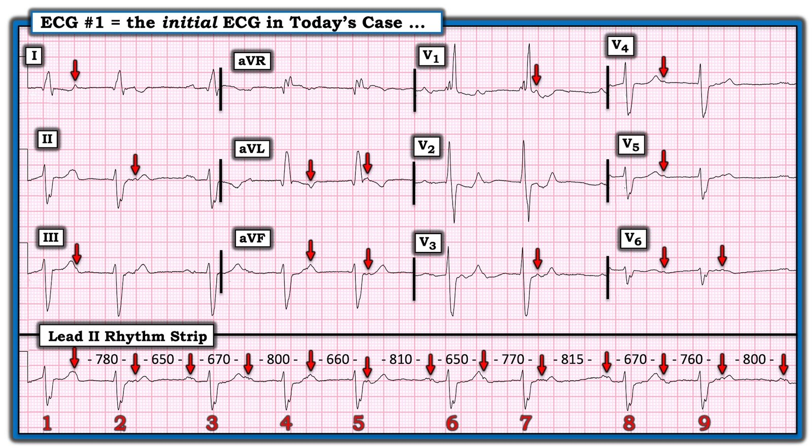
MINH HỌA BẰNG GIẢN ĐỒ BẬC THANG cho Mobitz I:
Những người đã xem điện tâm đồ #1 nhận ra blốc hai phân nhánh — nhưng không nhận ra rằng còn có blốc AV độ 2 Mobitz I ( = Wenckebach AV). Giản đồ bậc thang (laddergram) trong Hình 3 làm rõ sự hiện diện của dẫn truyền Wenckebach điển hình.
- ĐIỂM THEN CHỐT #5: MẤU CHỐT giúp dễ nhận ra Wenckebach AV — là biết khi nào cần tìm nó! Lùi ra xa bản ghi trong Hình 3 một chút — sẽ thấy nhịp theo nhóm (group beating) (tức là có 3 “nhóm” nhát với các khoảng R-R ngắn hơn có thời gian xấp xỉ bằng nhau — ngăn cách bởi 3 khoảng R-R dài hơn có thời gian xấp xỉ bằng nhau). Xin nhấn mạnh — Các khoảng R-R “ngắn hơn” giữa nhát #1-2; 6-7; và 8-9 có thời gian gần như bằng nhau. Các khoảng R-R “dài hơn” giữa nhát #2-3; 5-6; và 7-8 cũng có thời gian gần như bằng nhau. Điều này khó xảy ra do ngẫu nhiên!
- ĐIỂM THEN CHỐT #6: Mặc dù nhiều sóng P trong Hình 3 bị che khuất ít nhất một phần — MẤU CHỐT là nhận ra rằng khoảng PR ở cuối mỗi khoảng ngưng tương đối (tức là khoảng PR trước nhát #3, 6 và 8) — đều như nhau (tức là 0.24 giây). Điều này chắc chắn không phải do ngẫu nhiên!
- T.B. (P.S.): Khi cân nhắc khả năng Mobitz I so với Mobitz II — blốc AV độ 1 ở nhát dẫn truyền thứ 1 của mỗi nhóm gặp thường hơn nhiều trong Mobitz I.

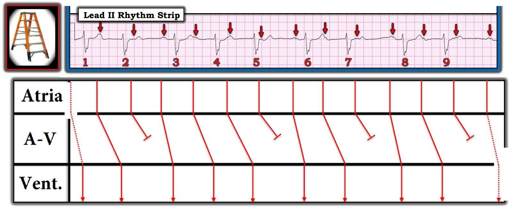
XEM LẠI điện tâm đồ #2:
Tôi xin nhấn mạnh rằng có rất nhiều nhiễu trong điện tâm đồ #2. Vì vậy — tôi hoàn toàn thừa nhận rằng mình không thể chắc chắn về mọi điều đang diễn ra trên bản ghi này. Dù vậy — tôi rất nghi ngờ rằng, thay vì AFib — bệnh nhân này đã có cùng blốc AV độ 2 Mobitz I đó trên điện tâm đồ trước phẫu thuật, ghi 2 tháng trước ( = điện tâm đồ #2 trong Hình 4).
- Thay vì các phức bộ QRS xuất hiện hoàn toàn ngẫu nhiên — có dáng dấp của nhịp theo nhóm trên dải nhịp chuyển đạo II dài trong Hình 4. Hơn nữa — có nhiều khoảng R-R có thời gian tương tự nhau hơn mức tôi chờ đợi nếu chỉ do ngẫu nhiên.
- Nhưng MANH MỐI mạnh nhất (theo ý kiến của tôi) cho thấy có Wenckebach AV trên điện tâm đồ #2 — được làm nổi bật bằng các mũi tên ĐỎ trên dải nhịp chuyển đạo II dài. Tôi tin rằng dù đường nền nhiễu nặng — chúng ta vẫn có thể thấy một “bướu” nổi rõ hơn đứng trước phức bộ QRS của nhát #4, 7, 10 và 11 — với mỗi sóng P xoang có mũi tên ĐỎ này gợi ý cùng một khoảng PR kéo dài (0.24 giây) như đã thấy ở điện tâm đồ #1.
- Dù hoàn toàn thừa nhận có nhiễu rõ rệt ở cả 12 chuyển đạo — tôi tin rằng các mũi tên ĐỎ bổ sung mà tôi đặt ở một số chuyển đạo ghi đồng thời khác được chọn lọc xác nhận rằng các mũi tên ĐỎ tôi vẽ trên chuyển đạo II dài của điện tâm đồ #2 đúng là sóng P xoang với khoảng PR dài.
- Tôi tin rằng có thêm một “cái gì đó” (tức là ngoài nhiễu) dưới phần lớn các vị trí tôi đặt mũi tên HỒNG trên chuyển đạo II dài của điện tâm đồ #2. Chẳng phải nhịp điệu (tức là mức độ biến thiên khoảng R-R) mà chúng ta nhận ra ở điện tâm đồ #1 phù hợp với nhịp điệu biến thiên R-R được làm nổi bật bằng các mũi tên HỒNG và ĐỎ trên điện tâm đồ #2 sao?
- Cuối cùng — điện tâm đồ #2 trong ca hôm nay được ghi 2 tháng trước điện tâm đồ #1. Vì không có thay đổi đáng kể nào về hình dạng QRS và sóng ST-T giữa 2 bản ghi này — Chẳng phải hợp lý hơn khi cho rằng bệnh nhân này đã ở trong tình trạng Wenckebach AV suốt từ đầu? — thay vì giả định rằng 2 tháng trước bệnh nhân đã tự chuyển (và không triệu chứng) từ AFib sang nhịp xoang mà nay biểu hiện dẫn truyền Mobitz I?
- ĐIỀU CỐT LÕI: Như tôi đã nhấn mạnh ở trên — đơn giản là có quá nhiều nhiễu để chắc chắn 100% về giả thuyết của tôi. Nhưng Những điểm giảng dạy MẤU CHỐT khiến tôi đi sâu vào nhiều chi tiết như vậy về 2 bản ghi này là: i) Người làm cấp cứu thực sự sắc sảo hy vọng sẽ nắm bắt được những manh mối tinh tế-nhưng-rất-quan-trọng mà tôi đưa ra, giúp dễ nhận ra các rối loạn dẫn truyền AV phức tạp; và, ii) Bài học cần rút ra khi bạn thấy nhiễu ngăn cản việc diễn giải chính xác — là ghi lại điện tâm đồ.

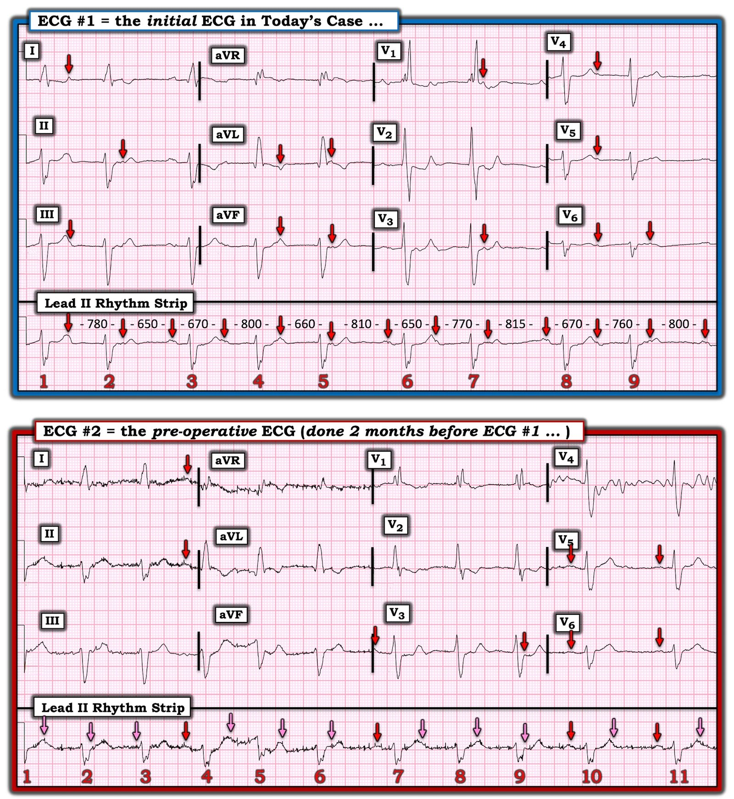
PHẦN BỔ SUNG: Có Blốc Ba-Phân nhánh không?
Thuật ngữ blốc “ba phân nhánh” — hàm ý dẫn truyền bị suy giảm ở cả 3 phân nhánh dẫn truyền chính: i) nhánh phải; ii) phân nhánh trái trước; và, iii) phân nhánh trái sau.
- Dù vậy — thuật ngữ “blốc ba phân nhánh” không còn được khuyến cáo sử dụng (Surawicz và cs., Circulation — AHA/ACCF/HRS Recs, 2009). Lý do là “sự khác biệt rất lớn về giải phẫu và bệnh học tạo ra hình ảnh này” — cũng như thực tế là thường không thể chẩn đoán xác định blốc ba phân nhánh từ điện tâm đồ bề mặt. Đơn giản là chúng ta không thể biết LIỆU PR kéo dài hay Mobitz I ở bệnh nhân có blốc hai phân nhánh (như trong ca hôm nay) là do bệnh nút AV hay do bệnh ở phân nhánh dẫn truyền còn lại.
- Hiếm khi có thể chẩn đoán tổn thương cả 3 phân nhánh dẫn truyền — chẳng hạn nếu có RBBB và LAHB luân phiên với LPHB. Nhưng ngay cả trong tình huống này — các khuyến cáo hiện nay ưu tiên mô tả rõ ràng bằng cách tránh dùng thuật ngữ “blốc ba phân nhánh”, và thay vào đó ghi nhận từng rối loạn dẫn truyền hiện có (tức là trong Hình 4 — có blốc AV độ 2 Mobitz I + RBBB + LAHB).
- Suy nghĩ cuối cùng: Vậy nên làm gì cho bệnh nhân hôm nay, người có Mobitz I + RBBB + LAHB? Đúng như Dr. Smith nói — chừng nào bệnh nhân này vẫn không triệu chứng (tức là không ngất hay tiền ngất) — quản lý ngoại trú kèm chuyển khám chuyên khoa tim mạch có vẻ là phù hợp. Trong quá trình đó — tôi sẽ chỉ định máy Holter 24 giờ vì những lý do tôi đã nêu trước đó (tức là để bảo đảm không có cơn blốc AV hoàn toàn thoáng qua — và không có khoảng ngưng kéo dài hay dấu hiệu điện tâm đồ nào khác gợi ý SSS).
===================================
PHẦN BỔ SUNG cho CA BỆNH hôm nay:
Dr. Smith đã thêm 5 bản ghi vào cuối ca hôm nay. Mỗi bản ghi cho thấy một biến thể của blốc Wenckebach AV ( = blốc AV độ 2 Mobitz loại I) mà các bác sĩ đọc điện tâm đồ đã không phát hiện. Thông điệp đã rõ ràng:
- “Birds of a feather flock together” (ngưu tầm ngưu). Câu tục ngữ tiếng Anh này đã giúp ích tôi rất nhiều trong lĩnh vực rối loạn nhịp. Ý tôi là — khi gặp một phần của điện tâm đồ phức tạp mà tôi không hiểu — nếu mọi thứ khác trên bản ghi đều chỉ về một hiện tượng nhất định — thì nhiều khả năng phần bản ghi tôi không hiểu cũng là một biểu hiện của chính hiện tượng đó.
- Trong ca hôm nay — có nhiều biến thể của Wenckebach AV. Vì vậy — rất có thể những nhịp ban đầu còn chưa rõ khác rồi cũng sẽ hóa ra là một dạng nào đó của Wenckebach.
- Wenckebach AV kinh điển thì DỄ nhận ra. Khoảng PR dài dần cho đến khi một nhát bị rớt — rồi chu kỳ bắt đầu lại với khoảng PR ngắn lại sau khoảng ngưng ngắn.
- Dù vậy — có nhiều biến thể có thể gặp của Wenckebach AV, bao gồm các hiện tượng như nhát thoát bộ nối, PAC làm cài đặt lại chu kỳ, nhát dội (echo), đường dẫn truyền kép trong nút AV (mỗi đường có đặc tính dẫn truyền AV riêng) — và các hiện tượng khác. Nghi ngờ có một dạng Wenckebach AV nào đó — với sự hỗ trợ của việc biết các biến thể có thể gặp này của “chủ đề” Wenckebach cộng với một chiếc compa đo (calipers) (để nhanh chóng xác nhận thời gian khoảng PR) — thường là tất cả những gì cần để khẳng định chẩn đoán.
- Việc nhiều người không cân nhắc chân lý “Birds of a feather” trong ca hôm nay — chính là điều dẫn đến bỏ sót chẩn đoán Wenckebach AV nhiều lần.